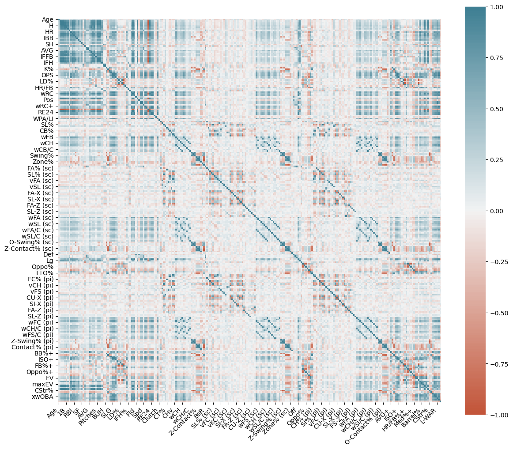
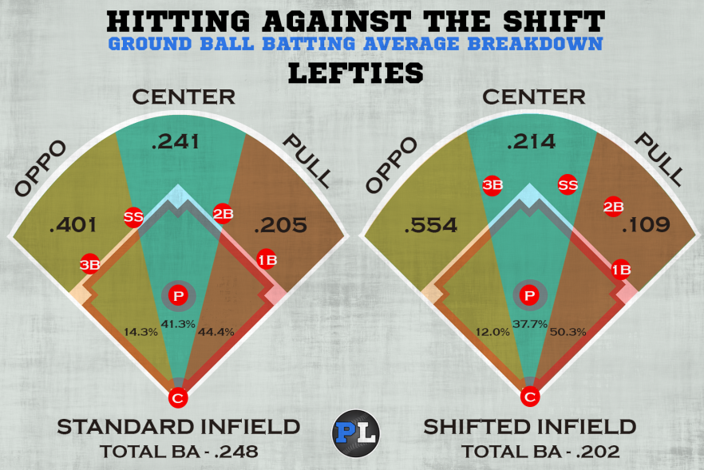

Decoding the Diamond Dynamics:
Baseball Analysis for a New Game
Predicting wOBA, SLG, BABIP, and wRC+ After Recent Rule Changes
Death to the Shift!
The Modern Era of baseball (2000s-2020s) has seen an increased emphasis on advanced statistics and analytics that has revolutionized player evaluation and strategic decision-making.
Teams have leveraged data to evaluate players more precisely, influencing strategic decisions. Pitchers excelled as teams shifted to power pitching as well as optimizing matchups with pitching changes and defensive shifts.
To combat these changes, hitters began emphasizing launch angles and power hitting, leading to fewer balls in play.
To maintain pace of play and increase excitement, this season the MLB implemented a pitch clock, limited defensive shifts, and instituted a universal DH, along with a few changes to increase base stealing attempts.
All together, these changes were expected to increase pace of play, increase balls in play, and overall, just make the game more exciting.
Project Overview
Focusing on batters with more than 150 plate appearances in 2018-2023 (with 2020 excluded), I attempted to uncover which features might predict improved or declining player performance following this years rule changes.
By employing machine learning algorithms on historical player data, the project aims to construct predictive models that classify whether a player would improve in 4 key metrics:
Overall Hitting Performance => wOBA
Power => SLG
Average on In-Play Balls => BABIP
Run Creation => wRC+
Clean Up Hitter: The ETL Process
Like most data analysis projects, this one started with hours of ETL and data cleaning. I started with Pybaseball, a module that could be easily installed and which scrapes the website Fangraphs for historical and present baseball data.
However, the pybaseball module had issues halfway through the ETL process, so I turned to Frangraphs directly to export 2023 data to add to my pervious data.
relevant_years = [2018, 2019, 2021, 2022]
filtered_batting_data = batting_data[batting_data['year'].isin(relevant_years)]
woba_2023 = batting_23[['player_id', 'woba']].rename(columns={'woba': 'woba_2023'})
batting_grouped_data = filtered_batting_data .groupby(['player_id', 'name']).mean()
# Merge player names with the result DataFrame
players_batting_output = pd.merge(
batting_grouped_data,
woba_2023,
on=['player_id'])
I used two different sets of data. One had over 325 features (or columns) with advanced statcast metrics. The other included 12 columns with more traditional metrics.
I ended up choosing the dataset with the most features. I had run some initial models with less features and was getting weak results.
In addition, because I was only returning 256 batters that had played at least one season from 2018-2022 with a minimum of 150 plate appearances ('PA') in those years and a min of 150 PA this year, I didn't have a ton of data to train my models on.
Even after selecting this dataset, I decided to try pairing down my data using correlation plots, but my initial models were not as successful. In all honesty, at the cleaning portion, most of my models were not great.
Feature Correlation Plot

Ultimately, incorporating a greater number of features consistently yielded more accurate models and so, I retained as many columns as possible (although some had to be dropped due to NAN values).
Additionally, I opted to utilize Z-scores and investigate the differences between prior year averages and 2023 Z-scores. This approach was chosen because the rule changes aimed to enhance offensive outcomes for all players, and given the expectation of improvement across the board, comparing Z-scores was more appropriate than examining raw numbers to determine whether improvements occurred.
The primary objective of this exercise was to identify which players benefited most from the rule changes and the underlying reasons for their improvement and thus, Z-scores were necessary.
Swinging for the Fences: Constructing a Predictive Model
I tried everything. Regressions, Neural Networks, Oversampling, Logistic Regressions, Tuners and Crooners.
I got a lot of help from John Pette's predictions and the machine learning methods contained therein. XGBoost and SMOTE where new to me and he had some great explanations and links to even better explanations.
In the end, once I wrote out a function and could quickly load and rerun models, I got something to work with through trial and error.
XGBoost Classifier with SMOTE Over Sampling
def train_and_evaluate_classifacation_model(df, target_column):
# Drop rows with missing values
df.dropna(axis=1, inplace=True)
# Convert the target column into binary classes (0 or 1)
df[target_column] = df[target_column].apply(lambda x: 1 if x > 0 else 0)
# Split data into features (X) and target (y)
X = df.drop(target_column, axis=1)
y = df[target_column]
# Split data into training and testing sets
X_train, X_test, y_train, y_test = train_test_split(X, y, test_size=0.2, random_state=42)
# Standardize features using StandardScaler
scaler = StandardScaler()
X_train_scaled = scaler.fit_transform(X_train)
X_test_scaled = scaler.transform(X_test)
# Define cross-validation strategy
kf = KFold(n_splits=5, shuffle=True, random_state=42)
# Build the pipeline
imb_pipeline = Pipeline([
('smote', SMOTE(random_state=42)),
('xgbclassifier', xgb.XGBClassifier(
max_depth=5,
learning_rate=0.01,
n_estimators=600,
subsample=0.5,
colsample_bytree=0.25,
objective='binary:logistic',
random_state=42
))
])
# Train the pipeline on the training data
imb_pipeline.fit(X_train_scaled, y_train)
# Make predictions on the test set
y_pred = imb_pipeline.predict(X_test_scaled)
# Create the SHAP explainer
final_estimator = imb_pipeline.named_steps['xgbclassifier']
explainer = shap.Explainer(final_estimator, X_train_scaled)
# Calculate SHAP values
shap_values = explainer(X_test_scaled, check_additivity=False)
# Calculate evaluation metrics
balanced_recall = balanced_accuracy_score(y_test, y_pred)
accuracy = accuracy_score(y_test, y_pred)
return {
"accuracy": accuracy,
"balanced_recall": balanced_recall,
"shap_values": shap_values,
"X_test_scaled": X_test_scaled,
"X_train": X_train,
"X_train_scaled": X_train_scaled,
"y_pred": y_pred,
"y_test": y_test,
"y_train": y_train,
"X_test": X_test
}
Here, I defined a function that takes a dataset and a target column name as inputs and trains an XGBoost classification model with SMOTE oversampling.
The function preprocesses the data by dropping missing values, converting the target into binary classes, and splitting it into training and testing sets.
It standardizes features and builds a pipeline with SMOTE and XGBoost classifier components. The model is trained, predictions are made, and SHAP values are computed so that we can examine feature importance.
Above the Mendoza Line: Predicting wOBA Improvement
So here we go! After cleaning the data and setting things up for success, I ran the model. I chose wOBA as my first model, because it measures overall hitting production.
I called the function and ran it.
#Run the model with all the features.
result_woba = train_and_evaluate_classifacation_model(batter_woba_df, 'zscore_difference_woba')
Accuracy: 0.65
Recall: 0.65
In all seriousness, it wasn't perfect, but I was actually happy enough with it considering all the things that could go wrong or right for a batter in a given season.
What intrigued me the most was the performance of features -specifically, which elements the algorithms were predominantly relying on to make predictions. Due to the large number of columns, the significance of individual features is relatively low, even for the most crucial ones.
However, the top few features were notably more important than the rest respectively.
I used the SHAP module to calculate and plot the importance.
SHAP Violin Plot for wOBA

As it turns out, when it comes to predicting overall hitting performance, key indicators such as OPS, Hard Hit%, and BB/K ratio play a significant role under the new rules.
Interestingly, I tested the model by selecting only the top five most important features, and even with this reduced set of variables, I achieved the same levels of Accuracy and Recall as before:
#Run the model with the top 5 most important features.
result_woba_less_c = train_and_evaluate_classifacation_model(batter_woba_df, 'zscore_difference_woba')
Accuracy: 0.65
Recall: 0.65
Although this approach didn't work as seamlessly for every model (for example, SLG predictions fell 10 percentage points with only 8 features), it did demonstrate that the most crucial features for predicting wOBA can still yield reliable predictions when considered independently of other statistics.
Furthermore, this experience provided me with a higher level of confidence in the importance of feature rankings across various models, enabling a deeper understanding of why specific players found greater success following the rule changes.
Handedness
When going over the data, I checked to see if BABIP has predictably increased for left-handed batters as this is the group most affected by defensive shifts. Looking at the chart below, you can see that as analytics and defensive shifts gained more importance after the turn of the century, lefties were disproportionately affected.
Batting Against the Shift before 2023
I figured adding handedness in my models would massively increase my accuracy. So much in fact, that I considered not doing it because I was going to have to do some ETL to get to it.
And I thought, handedness might be too closely linked with the outcome variable, to the extent that it might introduce redundancy or overfitting in a predictive model. But, I did it anyway so I could see some models in the 90s.
Fangraphs does not include handedness, perhaps because they do include splits batting AVG, OPS, Etc. against RHP v LHP(more on that later). So, I had to find a database with the handedness included, which I did at Baseball Savant.
After an annoying merge and one HAWWWT coding, I ran my models and they all turned out worse by at least two percentage points, except the one we might expect: BABIP.
BABIP Model Performance without Handedness
result_babip = train_and_evaluate_classifacation_model(batter_babip_df, 'zscore_difference_babip')
Accuracy: 0.73
Recall: 0.73
BABIP Model Performance with Handedness
result_babip_w_bat_side = train_and_evaluate_classifacation_model(batter_w_bat_side, 'zscore_difference_babip')
Accuracy: 0.75
Recall: 0.75
However, for the rest of the models, the performance dipped a point or two. Because handedness seemed like such a stark distinction, I believed it would significantly enhance all models.
Yet, including so many features from the start may have rendered handedness unnecessary. The model likely handled it inadvertently through splits and other features. Adding bat-side was likely redundant and might have contradicted some elements that contributed to the previous predictions.
Still, 59% of lefties increased their BABIP Z-scores, compared to only 40% of righties -this difference was by far the most significant. Switch hitters, who would also benefit from the shift ban, came in at 57%.
In contrast, for wOBA, 52% of lefties increased and 41% of righties did, with switch hitters at 52%. For SLG, the percentages were 49%, 44%, and 57% respectively. Lastly, for wRC+, they were 52%, 43%, and 48%.
Thus, while it holds true that lefties have benefited the most from these new rules, it doesn't necessarily imply that handedness is the best predictor when considering all the other stats.
Feel free to check out an article by clicking the button below that discusses the possibility that bat side might not be the most effective predictor of success with the rule changes for all players.
Barrel Up: The Results
While I focused on wOBA to start, my best model was SLG at 77% accuracy, with BABIP, wOBA, and wRC+ all with different levels of success.
result_slg = train_and_evaluate_classifacation_model(batter_slg_df, 'zscore_difference_slg')
print(f"Accuracy: {result_slg ['accuracy']:.2f}")
print(f"Recall: {result_slg ['balanced_recall']:.2f}")
Accuracy: 0.77
Recall: 0.77
BABIP (with handedness) topped out at 75%. wRC+ at 67% and as we saw before, wOBA couldn't crack 65%.
Now let's check out the SHAP plots to determine feature importance.
SHAP Violin Plot for SLG

This phenomenon truly intrigues me. Many of SLG's crucial features, such as SL-Z (sc), which gauges a batter's proficiency in connecting with sliders thrown within the strike zone, offer valuable insights into a batter's performance against offspeed pitches and their ability to identify and respond effectively within the zone.
Further in-depth analysis is required to peel back the underlying reasons. Interestingly, they exhibit a negative correlation. In essence, if a batter struggled with offspeed hits previously, these indicators now predict an upswing in their power this year.
Perhaps the decline in challenging "stuff" can be attributed to the pitch clock compelling pitchers to speed up their delivery, benefiting those players who previously faced challenges with offspeed pitches.
Such a conclusion, however, remains speculative. A whole project could be dedicated to this pursuit. Perhaps that's an endeavor for another time.
SHAP Violin Plot for BABIP

Interestingly, the batting side factor does not even appear on the SHAP plot. What's intriguing, and aligns with intuitive reasoning, is that the average BABIP from previous years emerged as the most influential factor in predicting BABIP for the year 2023.
However, an inverse relationship was observed. This factor exhibited significant importance in the negative direction. In essence, if a batter had a lower BABIP in the past (as often seen with many left-handed batters), they were more likely to experience a favorable Z-score difference.
SHAP Violin Plot for wRC+

wRC+ might be perceived as the least intriguing among the three metrics. The model essentially projected that if a player faced challenges in generating runs previously, there was a higher probability of improvement under the new rules, when compared to those players who might have already reached their peak performance. This prediction essentially aligns with the concept of regression to the mean.
To showcase the outcomes, I crafted a player dashboard where users can input a player's name. It also presents the Z-score differences for all the targeted variables.
Furthermore, and maybe most importantly, it highlights whether the predictions were accurate.
Please click on the baseballs below to explore my dashboard (powered by Flask), and don't miss the opportunity to explore my partner's projects as well.

Rounding Third: Where to Head from Here
Home! Obviously. Right?
Understanding how modern rule changes have impacted player performance, was the aim of this project. It delved into the intricate interplay between baseball analytics, statistical modeling, and machine learning. Through the predictive power of various player metrics, we got to shed some light on which factors could foreseeably determine success under the evolving landscape of the sport.
The exploration into the relationship between advanced statistics and player performance yielded both insights and challenges. The integration of machine learning techniques, such as XGBoost with SMOTE oversampling, showcased the potential of harnessing data to uncover underlying trends and patterns. While the models achieved reasonable accuracy in predicting performance metrics such as SLG and BABIP, it's important to note that no model captured the full complexity of human performance within the ever-changing context of a baseball season.
As with any endeavor in data analysis, this project has raised more questions than it has answered. The results indicate that certain features play a crucial role in predicting player improvement or regression, yet the "why" remains open for interpretation. Deeper analysis into the specific impact of rule changes, such as the effect of the pitch clock on batter-pitcher interactions could provide a richer understanding of the observed trends.
Future explorations could involve refining the models by incorporating more granular data, considering player trajectories over multiple seasons, and examining the use of some sort of feature tuner. Additionally, investigating the implications of these findings for player development, team strategies, and the game as a whole could offer valuable insights into the broader implications of the rule changes.
Ultimately, this project was fun and illustrated the intersection of baseball, data and technology. More than any sport, it lends itself to analysis and it continues to be a fertile ground for exploration.
GitHub Project Repository